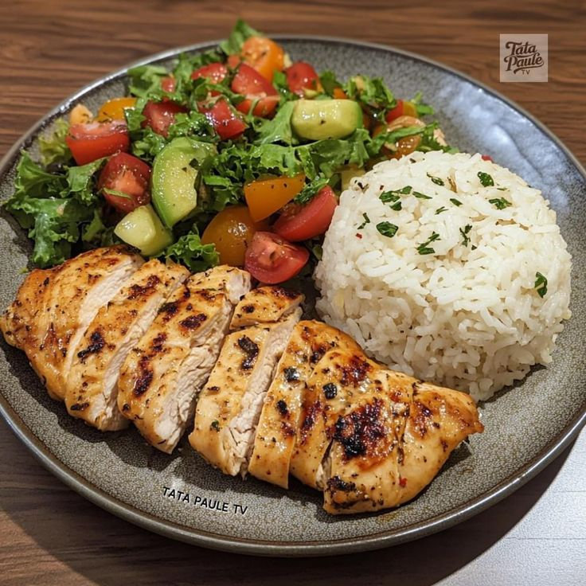

Dicas para evitar uma alimentação não saudável

Trocas saudáveis e substituições
Prefira substituir alimentos ultraprocessados por opções mais nutritivas, como frutas, vegetais, grãos integrais e proteínas magras. Exemplos: trocar biscoitos e salgadinhos por palitos de cenoura ou frutas secas; substituir pizza congelada por uma pizza caseira com ingredientes naturais comer saudavel não precisa ser dificil, e também pode ser gostoso .